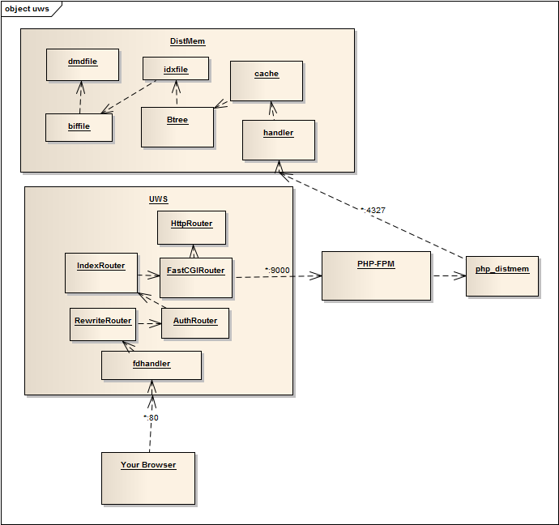

测试站点
主页
关于
GitHub
这个站点是干嘛的
这仅仅是一个演示站点，由于展示
uws
和
distmem
的基本功能。首页是一个十分简单的留言板程序，数据存储在distmem中，而整个网站是运行在uws服务器上的。
技术架构
下图是总体架构概览图：

您的请求发送到 uws 服务器上，服务器经过多次过滤请求，把请求交给 fastcgiRouter 处理。
该 Router 对来访请求进行分析，抽离出头信息，构造
fastcgi
协议包发送到本服务器运行的
php-fpm
上，php-fpm是php语言的fastcgi服务器。
php服务器通过我编写的
php_distmem
驱动连接到distmem服务器上，distmem是一个数据库服务器，监听4327端口，distmem通过查询或修改存储的数据返回结果，再层层返回，最终回到您的浏览器中。
若希望了解更多，欢迎访问本人的
Github项目主页
。
联系我
GitHub
http://github.com/usbuild
Sina-Weibo
http://weibo.com/usbuild
Email
njuzhangqichao@gmail.com
Please enable JavaScript to view the
comments powered by Disqus.